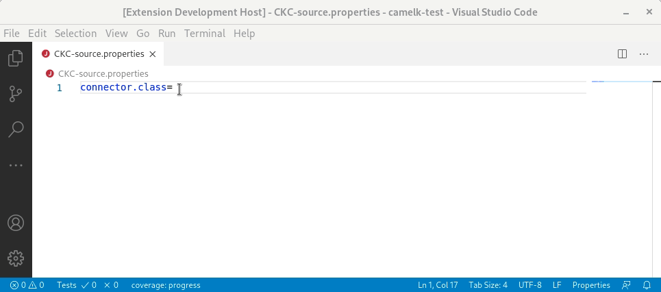
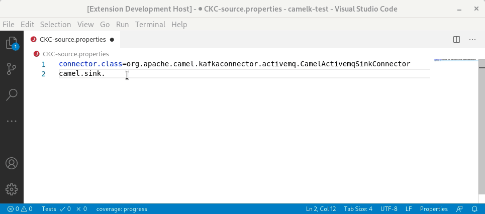
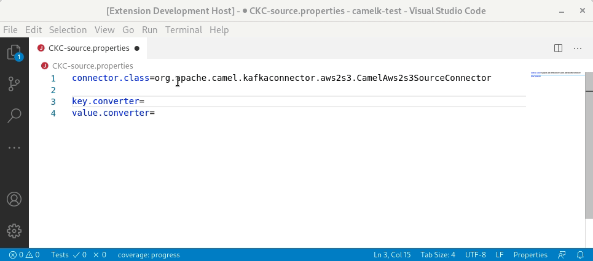
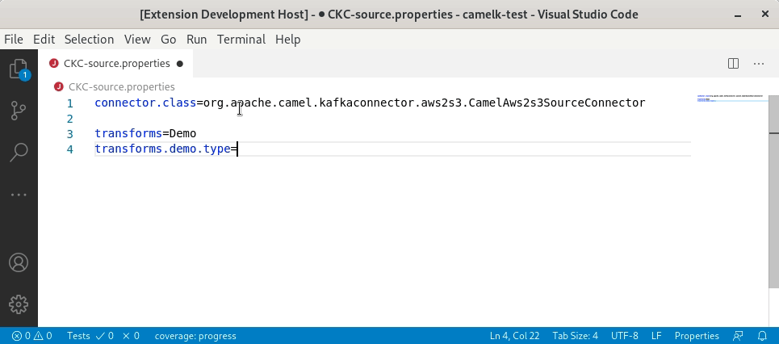
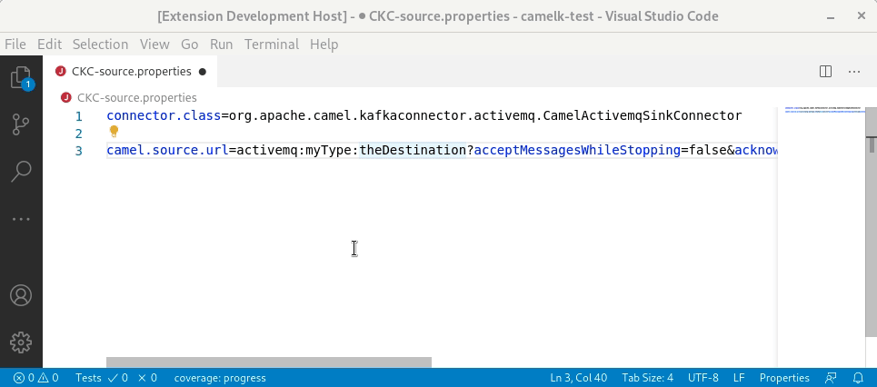
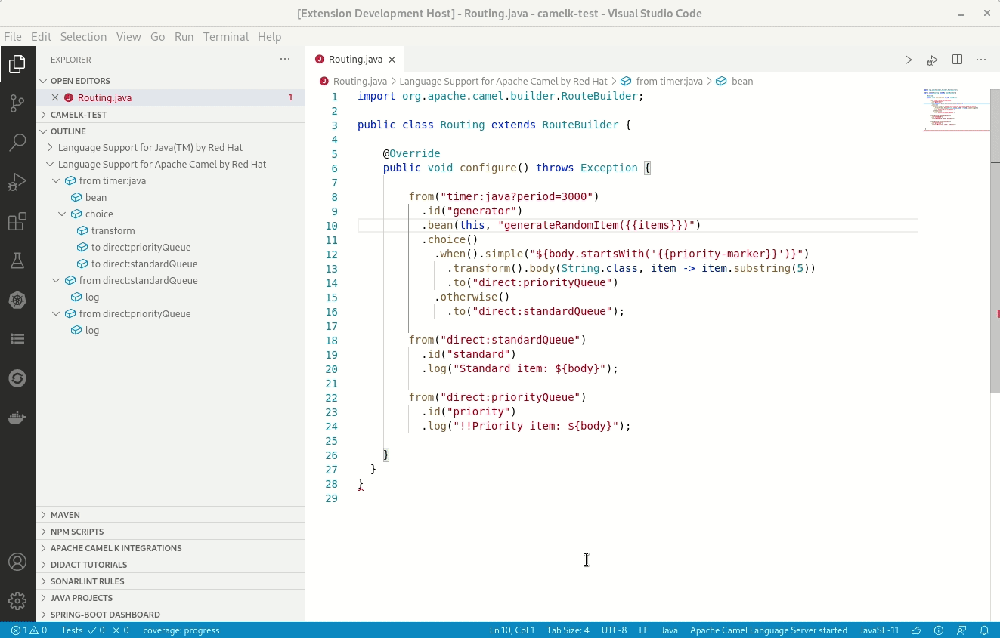
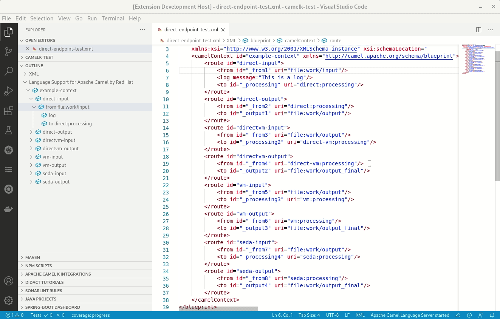

A new release of VS Code Language Support for Apache Camel 0.0.28 is available. It includes an interesting set of new features.
Camel 3.6.0 upgrade
Camel 3.6.0 catalog is now provided by default. The 3.6.0 version is also leveraged internally.
Camel Kafka Connector Properties file improvements
Previously, the support for Camel Kafka Connector was limited to Camel URI in camel.(sink|source).url property value. This release adds support for the list of properties provided for each parameter instead of using a potentially long Camel URI. It relies on the new Camel Kafka Connector Catalog.
Completion for connector.class property value
There is completion for the connector.class property value. The display name of the completion item is the simple class name. The fully qualified name is inserted.

Completion and hover for component properties
There is completion and hover for camel.sink.* and camel.source.* property keys based on Camel Kafka Connector Catalog.

Completion for Converters
Camel Kafka Connector provides specific Kafka key and value Converters for some connectors. In this case, they are proposed for completion as property value of key.converter and value.converter.

Completion for Transformers
Camel Kafka Connector provides specific Kafka Transformers for some connectors. In this case, they are proposed for completion as property value of transforms.*.type.

Refactor action to convert Camel URI to list of properties
When a lot of parameters are required to configure the Camel components, using the Camel URI through the camel.(sink|source).url can lead to a very long string which is not easy to read. Camel Kafka Connector allows to use a list of properties instead. A refactor action is available to convert a Camel URI to a list of properties.

Camel K modeline improvements
The completion for resource-like options open-api, property-file and resource are now filtering files inside the IDE specific folder .vscode. For open-api, only json and yaml files are now proposed.
Outlines and Document symbols
Previously, there was outlines and Document symbols for Camel contexts and routes for XML DSL only.
In this release, the Camel route steps are provided for XML and Java DSL.
It can be leveraged in the outline, or using the Find symbol command or even with the breadcrumb. A little trick to have the flow of routes displayed in execution order in the Outline view is to select Sort by position option.
 
What’s next?
Provide your feedback and ideas! You can start discussions on Zulip camel-tooling channel. You can create and vote for issues on github Camel Language Server and VS Code Language support for Apache Camel repositories. You can create and vote for issues on the jira used by the Red Hat Integration tooling team.